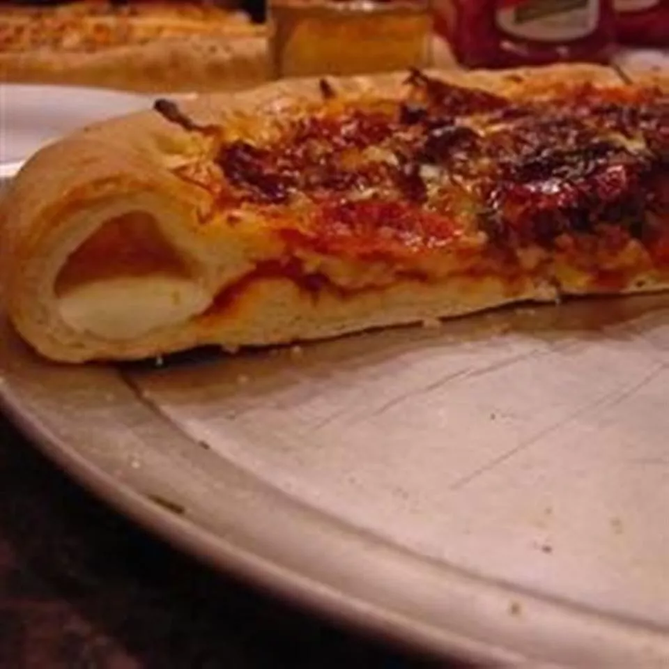

Jan's Copycat version of Pizza Hut's Stuffed Crust Pizza
Back Home

Description
Perfectly chewy crust stuffed with cheese, just like the pizzeria chain. Top this copycat pizza hut cheese crust
with sauce and your favorite toppings.
Ingredients
- 5 cups bread flour, divided, or as needed
- 1 (12 fluid ounce) can or bottle warm beer
- ¼ cup warm water
- 3 tablespoons shortening
- 1 tablespoon instant yeast
- 1 tablespoon brown sugar
- 2 teaspoons salt
- 1 teaspoon garlic powder
- 1 teaspoon onion powder
- 1 tablespoon olive oil, or to taste, divided
- 2 tablespoons cornmeal, or as needed
- 16 sticks string cheese
Steps
- Combine 4 cups bread flour, beer, water, shortening, yeast, brown sugar, salt, garlic powder, and onion
powder in the bowl of a stand mixer fitted with a dough hook attachment; mix until combined. With the mixer
running, add remaining flour, a little at a time, until dough pulls away from the sides of the bowl and
forms into a ball, about 2 minutes.
-
Lightly grease a large bowl with 1 teaspoon olive oil. Place dough into the bowl. Cover with a clean towel
and let rise until doubled in size, about 1 hour.
-
Grease 2 pizza pans with remaining 2 teaspoons olive oil; dust with cornmeal.
-
Punch dough down gently and divide into 2 equal portions. Place each portion onto a prepared pan. Cover and
let rest for about 5 minutes.
-
Stretch each dough out 1 inch past the edge of the pan. If dough shrinks back when stretched, cover and let
rest for 5 more minutes before stretching again.
-
Arrange 8 sticks cheese, ends touching, around the edge of 1 pan. Fold overhang over cheese and press dough
to seal. Repeat with the second pan.